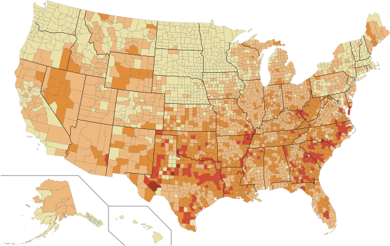
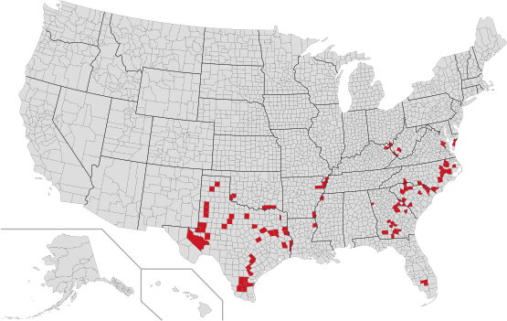

Big geographic variations in debt from medical and dental bills
The share of people with medical bills in collections varies widely from one county to another across the country.
All US Counties
Top 100
< 10%
11-20%
21-30%
31-40%
> 40%
All US Counties

Top 100
